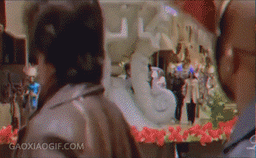

jQueryDOM
jQuery的遍历：
祖先：
parent()
parents()
parentsUntil()

后代 :
children()--------- >
find()---------

兄弟：
siblings()
next()
nextAll()
nextUntil()
prev()
prevAll()
prevUntil()
过滤
eq()

养成一个习惯，如果该jQuery方法可以设置元素值，那么该方法一定可以获取元素值。
DOM元素及属性操作。
1.设置（获取）元素内容。
html() 可以获取该元素的标签和内容
html(text)
text(text) 只可以获取该元素的文本内容；
text()
val(text)
val()
2.操作元素属性。（获取，设置，修改、删除）
.attr( )
.attr( )的参数有几种设置方法。
1）$('div') .attr('type')获取该属性属性值
2）$('div') .attr('type','value')设置属性值
3)$('div') .attr({
'data':'valuer1',
'data2':'value2'
})
设置一组属性值；
4）$('div').removeAttr('title')；
3.操作元素样式
css()
注：css（）方法不仅能获取行内样式，也能获取非行内样式
css() 方法的参数有几种设置方法，
css(name) 获取某个元素的行内样式
css('name',value) 设置行内样式
css({
name1:value1,
name2:value2
}) 设置多个行内样式
addClass( )方法
addClass（class） 给元素添加一个class
addClass( 'class1 class2 class3' )给元素添加多个class
removeClass(class) 给元素删除一个class
removeClass('class1 class2 class3')给元素删除多个class
toggleClass(class) 如果元素没有当前class那么添加，如果有那么删除

demo:
var box=$('div').css(['color','height','width']); //得到多个 CSS 样式的数组对象
for(var i in box){
//逐个遍历出来 alert(i+':' +box[i]);
}
jquery提供了一个方法$.each()他和for in一样可以遍历对象。
$.each(obj,function(index,value){
})
css方法
width()
height()
innerWidth() 包含内边距（padding）
outerWidth()包含内边距和边框( padding border)
offset() 获取某个元素相对于浏览器窗口(可视区域的距离)
position()获取某个元素相对于父元素的偏移距离
scrollTop()获取垂直滚动条的值；
scrollTop(value)设置垂直滚动条的值;
scrollLeft()获取水平滚动条的值；
scrollLeft(value)设置水平滚动条的值;
案例： 楼梯。选项卡。
jQuery 节点操作
一．创建节点 为了使页面更加智能化，有时我们想动态的在 html 结构页面添加一个元素标签，那么 在插入之前首先要做的动作就是：
1.创建节点。
var box=$('<div id="box">节点</div>'); //创建一个节点 $('body').append(box); //将节点插入到<body>元素内部
2.插入节点
append(content) 向指定元素内部后面插入节点 content
appendTo(content) 将指定元素移入到指定元素 content 内部后面
prepend(content) 向指定元素 content 内部的前面插入节点
prependTo(content) 将指定元素移入到指定元素 content 内部前面
after(content) 向指定元素的外部后面插入节点 content
before(content) 向指定元素的外部前面插入节点 content
3.节点操作
$('body').append($('div').clone(true)); //复制一个节点添加到 HTML 中
注：clone(true)参数可以为空，表示只复制元素和内容，不复制事件行为。而加上 true 参数的话，这个元素附带的事件处理行为也复制出来。
$('div').remove(); //直接删除 div 元素
remove()方法可以接收一个参数，过滤需要删除的元素。
$('div').replaceWith('<span>节点</span>'); //将 div 替换成 span 元素
案例1：增加表单姓名，
jQuery事件
1.jquery事件绑定；
$('input').bind('click',[data],fn)
$('input').bind('click',[1,2,4,5],function(evt) {
alert(evt.data)
})
1)同时绑定多个事件，公用一个事件处理函数
$('input').bind('mouseover mouseout',function(){
alert(1)
})
2)同时绑定多个事件，并使用不同事件处理函数
$('input').bind({
mouseout:function(){
alert('移出')
},
mouseover:function(){
alert('移入')
}
})
3）同一事件绑定不同事件处理函数；
$('input').bind('click',fn1)
$('input').bind('click',fn2)
function fn1(){
alert(1)
}
function fn2(){
alert(2)
}
执行顺序为事件绑定的顺序。
2.事件解绑
$('input').unbind() 不传参数的时候默认移除该DOM元素上所有事件。
$('input').unbind('mouseover') 移出该DOM元素上参数（'mouseover'）的事件。

3.jquery事件
jquery的事件就是将JavaScript事件简写（省略了on）,然后在后面加上括号。(注：前缀必须是jQuery对象)
document.onclick=function(){ > jQuery 写法> $(document).click(function(){
//事件处理函数 //事件处理函数
} })
值得注意的是mouseover、mouseout 和 mouseenter、mouseleave 的差别
（mouseover）当事件发生在当前元素外的元素上的时候，会立即触发mouseout；
（mouseenter）只要事件还在当前元素内，无论是否移动到子集元素上，都不会触发mouseleave事件
（hover事件）相当于给元素同时绑定了mouseenter 和 mouseleave
$('div').hover(fn1,fn2) // 鼠标移入执行fn1， 鼠标移出执行fn2
function fn1(){
alert(1)
}
function fn2(){
alert(2)
}

4.事件对象
JavaScript事件对象是浏览器默认传入的，但是对于浏览器的兼容问题，我们需要对事件对象进行兼容。很烦！但是jQuery已经帮我们解决了所有兼容性的烦恼，并且给我们添加了很多有用的方法。
event.target 获取绑定事件的DOM元素
event.type 获取事件的类型
event.data 获取事件中传递的数据
event.pageX/pageY 获取根据页面原点的X,Y值
event.screenX/screenY 获取根据显示器窗口的X,Y值
event.offsetX/offsetY 获取根据父元素X,Y值
event.which 获取当前鼠标点击的键1,2,3
event.altKey/shiftKey/ctrlKey/ 返回 true、false
1.拖拽作业
5.事件冒泡（默认事件）
preventDefault() //阻止默认行为 >>>> contextmenu
stopPropagation() //取消事件冒泡
return false 阻止默认事件和事件冒泡 双层阻止
6.模拟事件
$('input').trigger('click');
Q
（jquery对象）.trigger方法(事件名)；
模拟用户触发事件：同时触发事件冒泡。
$（'input'）.triggerHandler('click')
（jquery对象）.triggerHandler方法(事件名)
模拟用户触发事件：不触发事件冒泡。
计时器自动执行事件时可用
7.事件的命名空间
$（'input'）.bind('click',function(){
alert(1)
})
$（'input'）.bind('click.abc',function(){
alert(1)
})
方便模拟事件、解绑事件时选定特定事件。

8、事件委托
什么是事件委托：有 100 个学生同时在某天中午收到快递，但这 100 个学生不可能同时站在学校门口等，那么都会委托门卫去收取，然后再逐个交给学生。 而在 jQuery 中，我们通过事件冒泡的特性，让子元素绑定的事件冒泡到父元素(或祖先元素) 上，然后再进行相关处理即可。
传统事件绑定，会让性能变得很低，造成程序中非常多的冗余，事件委托完美解决了这个问题，他只需要给父级元素绑定一个事件，那么他的自己元素全部会在事件流中接受到事件，并对事件处理函数做出相应。
一个新的方法on(on已经全面取代了bind)
$('div').on('click','input',function(evt){
// alert(evt.target)
$('div').append($('input').eq(0).clone(true))
})
使用on添加事件
使用off删除on添加的事件
使用on添加的事件存在事件的命名空间，方便删除
传入的第二个参数是为了改变this的指向；
插件
插件(Plugin)也成为开发者共同编写、验证 和完善。而对于 jQuery 开发者而言，直接使用这些插件将快速稳定架构系统，节约项目成本。jQuery 扩展(Extension)，是一种遵循一定规范的应用程序接口编 写出来的程序。目前 jQuery 插件已超过几千种，由来自世界各地的开
插件概述
插件是以 jQuery 的核心代码为基础，编写出复合一定规范的应用程序。也就是说，插 件也是 jQuery 代码，通过都 js 文件引入的方式植入即可。 插件的种类很多，主要大致可以分为：UI 类、表单及验证类、输入类、特效类、Ajax 类、滑动类、图形图像类、导航类、综合工具类、动画类等等。
引入插件是需要一定步骤的，基本如下：
1.必须先引入 jquery.js 文件，而且在所有插件之前引入；
2.引入插件；
3.引入插件的周边，比如皮肤、中文包等。
1.jQuery validate
插件文档：
序号 | 规则 | 描述 |
1 | required=true | 必须输入的字段。 |
2 | remote="check.php" | 使用 ajax 方法调用 check.php 验证输入值。 |
3 | email=true | 必须输入正确格式的电子邮件。 |
4 | url=true | 必须输入正确格式的网址。 |
5 | date=true | 必须输入正确格式的日期。日期校验 ie6 出错，慎用。 |
6 | dateISO=true | 必须输入正确格式的日期（ISO），例如：2009-06-23，1998/01/22。只验证格式，不验证有效性。 |
7 | number=true | 必须输入合法的数字（负数，小数）。 |
8 | digits=true | 必须输入整数。 |
9 | creditcard: | 必须输入合法的信用卡号。 |
10 | equalTo="#field" | 输入值必须和 #field 相同。 |
11 | accept: | 输入拥有合法后缀名的字符串（上传文件的后缀）。 |
12 | maxlength=5 | 输入长度最多是 5 的字符串（汉字算一个字符）。 |
13 | minlength=10 | 输入长度最小是 10 的字符串（汉字算一个字符）。 |
14 | rangelength=[5,10] | 输入长度必须介于 5 和 10 之间的字符串（汉字算一个字符）。 |
15 | range=[5,10] | 输入值必须介于 5 和 10 之间。 |
16 | max=5 | 输入值不能大于 5。 |
17 | min=10 | 输入值不能小于 10。 |
2.jQuery cookie
会话跟踪技术
缓存是什么？数据交换的缓冲区>>>>临时储存。
如果说ajax是打电话，不受距离的限制，那么cookie就是对讲机。
cookie的安全性很差， 会很容易就被截取。所以在传输机密数据的时候最好不用使用cookie。
cookie的使用>jqueryCookie;插件。
jquery插件的使用方法。
创建一个会话cookie：
$.cookie(‘cookieName’,'cookieValue’);
注：关闭了浏览器就没有了，就是回话cookie。
创建一个持久cookie：
$.cookie(‘cookieName’,'cookieValue’，｛expires：7｝);
注：当指明时间时，就是持久cookie，expires后面传入的参数是天。
创建一个持久并带有效路径的cookie：
$.cookie(‘cookieName’,'cookieValue’，｛expires：7，path：’/'｝);
注：如果不设置有效路径，在默认情况下，只能在cookie设置当前页面读取该cookie，"/"的设置能够读取cookie的顶级目录。
获取cookie：
$.cookie(‘cookieName’); //如果存在则返回cookieValue，否则返回null。
删除cookie：
$.cookie(‘cookieName’,null);
注：如果想删除一个带有效路径的cookie，如下：
$.cookie('cookieName',null,{path:'/'})；
在浏览器中查看cookie
3.jQuery pageAtion

参数名 | 描述 | 参数值 |
maxentries | 总条目数 | 必选参数，整数 |
items_per_page | 每页显示的条目数 | 可选参数，默认是10 |
num_display_entries | 连续分页主体部分显示的分页条目数 | 可选参数，默认是10 |
current_page | 当前选中的页面 | 可选参数，默认是0，表示第1页 |
num_edge_entries | 两侧显示的首尾分页的条目数 | 可选参数，默认是0 |
link_to | 分页的链接 | 字符串，可选参数，默认是"#" |
prev_text | “前一页”分页按钮上显示的文字 | 字符串参数，可选，默认是"Prev" |
next_text | “下一页”分页按钮上显示的文字 | 字符串参数，可选，默认是"Next" |
ellipse_text | 省略的页数用什么文字表示 | 可选字符串参数，默认是"..." |
prev_show_always | 是否显示“前一页”分页按钮 | 布尔型，可选参数，默认为true，即显示“前一页”按钮 |
next_show_always | 是否显示“下一页”分页按钮 | 布尔型，可选参数，默认为true，即显示“下一页”按钮 |
callback | 回调函数 | 默认无执行效果 |
$("#pagination").pagination(10, {
num_edge_entries: 2, //两侧显示的首尾分页的条目数
num_display_entries: 4, //连续分页主体部分显示的分页条目数
callback: function(index){
//alert(index)
},
items_per_page:1 //每页显示的条目数
});
1.首先引入jquery 并在jquery之后引入jquery.pagination插件 。再引入pagination.css。样式。
2.在页面中进行布局
<div id="Pagination" class="pagination"> </div>
查看效果。
插件的使用。
1.获取数据。
2.一种新的思路>>>>>字符串拼接。
3.分页插件的第一个参数是可以计算的。 所有数据的个数除以每页显示的个数；
小学应用题： 幼儿园有五个小朋友， 阿姨买了20个苹果， 平均分给这五个人。 请问每个人能分多少个苹果。
4.获取显示页面的下标的区间。
起始位置：pageIndex （当前的下标）* （showImg）页面个数的坐标；
结束位置：pageIndex + 1（结束的下标）* (showImg) 页面个数的坐标 ;
5.绑定change事件。并重新运行函数。
拓展：hightcharts

轮播图插件